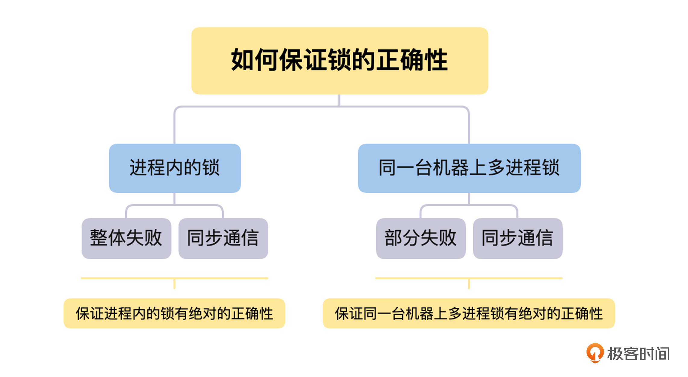

- 00 开篇词 掌握好学习路径，分布式系统原来如此简单.md.html
- 01 导读：以前因后果为脉络，串起网状知识体系.md.html
- 02 新的挑战：分布式系统是银弹吗？我看未必！.md.html
- 03 CAP 理论：分布式场景下我们真的只能三选二吗？.md.html
- 04 注册发现： AP 系统和 CP 系统哪个更合适？.md.html
- 05 负载均衡：从状态的角度重新思考负载均衡.md.html
- 06 配置中心：如何确保配置的强一致性呢？.md.html
- 07 分布式锁：所有的分布式锁都是错误的？.md.html
- 08 重试幂等：让程序 Exactly-once 很难吗？.md.html
- 09 雪崩（一）：熔断，让故障自适应地恢复.md.html
- 10 雪崩（二）：限流，抛弃超过设计容量的请求.md.html
- 11 雪崩（三）：降级，无奈的丢车保帅之举.md.html
- 12 雪崩（四）：扩容，没有用钱解决不了的问题.md.html
- 13 可观测性（一）：如何监控一个复杂的分布式系统？.md.html
- 14 可观测性（二）：如何设计一个高效的告警系统？.md.html
- 15 故障（一）：预案管理竟然能让被动故障自动恢复？.md.html
- 16 故障（二）：变更管理，解决主动故障的高效思维方式.md.html
- 17 分片（一）：如何选择最适合的水平分片方式？.md.html
- 18 分片（二）：垂直分片和混合分片的 trade-off.md.html
- 19 复制（一）：主从复制从副本的数据可以读吗？.md.html
- 20 复制（二）：多主复制的多主副本同时修改了怎么办？.md.html
- 21 复制（三）：最早的数据复制方式竟然是无主复制？.md.html
- 22 事务（一）：一致性，事务的集大成者.md.html
- 23 事务（二）：原子性，对应用层提供的完美抽象.md.html
- 24 事务（三）：隔离性，正确与性能之间权衡的艺术.md.html
- 25 事务（四）：持久性，吃一碗粉就付一碗粉的钱.md.html
- 26 一致性与共识（一）：数据一致性都有哪些级别？.md.html
- 27 一致性与共识（二）：它们是鸡生蛋还是蛋生鸡？.md.html
- 28 一致性与共识（三）：共识与事务之间道不明的关系.md.html
- 29 分布式计算技术的发展史：从单进程服务到 Service Mesh.md.html
- 30 分布式存储技术的发展史：从 ACID 到 NewSQL.md.html
- 春节加餐 技术债如房贷，是否借贷怎样取舍？.md.html
- 春节加餐 深入聊一聊计算机系统的时间.md.html
- 春节加餐 系统性思维，高效学习和工作的利器.md.html
- 结束语 在分布式技术的大潮流中自由冲浪吧！.md.html
- 捐赠
07 分布式锁：所有的分布式锁都是错误的？
你好，我是陈现麟。
通过学习“配置中心”的内容，你已经理解了在分布式系统中，为什么需要配置中心，以及怎么去实现一个设计良好的配置中心，现在，你终于不用再为管理极客时间后端各种服务的配置而烦恼了，这是一件值得高兴的事情。
但是，在极客时间后端系统快速迭代的过程中，你发现了一个服务中的代码逻辑问题：在有些场景下，你并不想让所有的实例都一起运行，只需要一个实例运行就够了，比如在用户生日当天，给用户发的祝福短信等类似定时通知的情况。
目前同一个服务的所有实例都是对等的，只能每一个实例都运行。如果将这个服务运行的实例修改为一个，虽然能解决刚才讨论的问题，但是这个实例就变成了一个单点，会面临性能瓶颈和单点故障的风险。
这真是一个两难的问题，我们应该如何解决呢？其实，这个问题的本质在于，我们希望同一个服务的多个实例，按照一定的逻辑来进行协同，比如刚才讨论的定时任务的逻辑。那么多个实例在同一时刻只能有一个实例运行，它就是一个典型的分布式锁的场景。
所以，在本节课中，我们将从“为什么需要分布式锁”，“怎么实现分布式锁”和“分布式锁的挑战”这三个层次依次递进，和你一起来讨论分布式锁相关的内容，解决你的困惑。
为什么需要分布式锁
在探讨分布式锁之前，我们先来了解一下锁的定义：锁是操作系统的基于原语，它是用于并发控制的，能够确保在多 CPU 、多个线程的环境中，某一个时间点上，只能有一个线程进入临界区代码，从而保证临界区中操作数据的一致性。
在我们日常的研发工作中，经常会在进程内部缓存一些状态信息，通过锁可以很方便地控制、修改这些内部状态信息的临界区代码，确保不会出现多个线程同时修改临界区的资源这种情况，防止异常问题的发生。所以，锁是我们研发工作中一个非常重要的工具。
其实，我们将锁的定义推广到分布式系统的场景中，也是依然成立的。只不过锁控制的对象从一个进程内部的多个线程，变成了分布式场景下的多个进程，同时，临界区的资源也从进程内多个线程共享的资源，变成了分布式系统内部共享的中心存储上的资源。但是，锁的定义在本质上没有任何的改变，只有持有锁的线程或进程才能执行临界区的代码。
这句话如何理解呢？我们来看看这个例子。在进程内部，多个线程同时修改一个变量，可能会出现多个线程每个都写一部分，导致变量写入冲突的情况发生。那么在分布式系统中，如果多个进程，同时往一个中心存储的同一个位置写入一个文件，同样也会出现文件写入冲突的情况。所以，锁的定义在本质上没有任何的改变。
另外，我们从课程开头提到的定时任务代码的例子里，可以知道在同一时间内，临界区只能由一个进程来执行，而只有持有锁的线程或进程才能执行临界区的代码。
所以我们可以这样理解，分布式锁是一个跨进程的锁，是一个更高维度的锁。我们在进程内部碰到的临界区问题，在分布式系统中依然存在，我们需要通过分布式锁，来解决分布式系统中的多进程的临界区问题。
怎么实现分布式锁
我认为锁可以分为三个不同的层次，除了我们上面讨论过的，进程内部的锁和跨进程、跨机器之间的分布式锁外，还有介于它们之间的，同一台机器上的多进程之间的锁。
进程内的锁，是操作系统直接提供的，它本质上是内存中的一个整数，用不同的数值表示不同的状态，比如用 0 表示空闲状态。加锁时，判断锁是否空闲，如果空闲，修改为加锁态 1，并且返回成功，如果已经是加锁状态，则返回失败，而解锁时，则将锁状态修改为空闲状态 0。整个加锁或者解锁的过程，操作系统保证它的原子性。
对于同一台机器上的多进程之间，我们可以直接通过操作系统的锁来实现，只不过由于协调的是多个进程，需要将锁存放在所有进程都可以访问的共享内存中，所有进程通过共享内存中的锁来进行加锁和解锁。
到这里，你应该明白了，对于跨进程、跨机器之间的分布式锁的实现也是同样的思路，通过一个状态来表示加锁和解锁，只不过要让所有需要锁的服务，都能访问到状态存放的位置。在分布式系统中，一个非常自然的方案就是，将锁的状态信息存放在一个存储服务，即锁服务中，其他的服务再通过网络去访问锁服务来修改状态信息，最后进行加锁和解锁。
上面讨论的就是分布式锁最核心的原理，不过从分布式锁的场景出发，如果我们想实现一把完备的分布式锁，需要满足以下几个特性，接下来我们就一起来讨论具体怎么实现。
第一个特性就是互斥，即保证不同节点、不同线程的互斥访问，这部分知识我们在上面已经讨论过，就不再赘述了。
第二个特性是超时机制，即超时设置，防止死锁，分布式锁才有这个特性。在概述篇的第二节课“新的挑战”中，我们讨论过部分失败和异步网络的问题，而这个问题在分布式锁的场景下就会出现。因为锁服务和请求锁的服务分散在不同的机器上面，它们之间是通过网络来通信的，所以我们需要用超时机制，来避免获得锁的节点故障或者网络异常，导致它持有的锁不能归还，出现死锁的情况。
同时，我们还要考虑，持有锁的节点需要处理的临界区代码非常耗时这种问题，我们可以通过另一个线程或者协程不断延长超时时间，避免出现锁操作还没有处理完，锁就被释放，之后其他的节点再获得锁，导致锁的互斥失败这种情况。
对于超时机制，我们可以在每一次成功获得锁的时候，为锁设置一个超时时间，获得锁的节点与锁服务保持心跳，锁服务每一次收到心跳，就延长锁的超时时间，这样就可以解决上面的两个问题了。
第三个特性是完备的锁接口，即阻塞接口 Lock 和非阻塞接口 tryLock。通过阻塞 Lock 接口获取锁，如果当前锁已经被其他节点获得了，锁服务将获取锁的请求挂起，直到获得锁为止，才响应获取锁的请求；通过 tryLock 接口获取锁，如果当前锁已经被其他节点获得了，锁服务直接返回失败，不会挂起当前锁的请求。
第四个特性是可重入性，即一个节点的一个线程已经获取了锁，那么该节点持有锁的这个线程可以再次成功获取锁。我们只需在锁服务处理加锁请求的时候，记录好当前获取锁的节点 + 线程组合的唯一标识，然后在后续的加锁请求时，如果当前请求的节点 + 线程的唯一标识和当前持有锁的相同，那么就直接返回加锁成功，如果不相同，则按正常加锁流程处理。
最后是公平性，即对于 Lock 接口获取锁失败被阻塞等待的加锁请求，在锁被释放后，如果按先来后到的顺序，将锁颁发给等待时间最长的一个加锁请求，那么就是公平锁，否则就是非公平锁。锁的公平性的实现也非常简单，对于被阻塞的加锁请求，我们只要先记录好它们的顺序，在锁被释放后，按顺序颁发就可以了。
分布式锁的挑战
通过上面的学习，你已经学会了分布式锁的基本原理，不过在分布式系统中，由于部分失败和异步网络的问题，分布式锁会面临正确性、高可用和高性能这三点的权衡问题的挑战。所以，我们接下来讨论一下分布式锁的挑战问题，这样你在以后的工作中，就可以依据业务场景来实现合适的分布式锁了。
分布式锁的正确性
首先，我们一起来讨论分布式锁的正确性问题。我们在使用分布式锁的情况下，是否有办法做到，不论出现怎样的异常情况，都能保证分布式锁互斥语义的正确性呢？
那么这里，我们将从进程内的锁如何保证互斥语义的正确性出发，分析在分布式锁的场景中，部分失败和异步网络同时存在的情况下，是否能确保分布式锁互斥语义正确性的问题。
对于进程内的锁，如果一个线程持有锁，只要它不释放，就只有它能操作临界区的资源。同时，因为进程内锁的场景中，不会出现部分失败的情况，所以在它崩溃时，虽然没有去做解锁操作，但是整个进程都会崩溃，不会出现死锁的情况。
这里要说明一下，我们讨论出现死锁的情况，不包括业务逻辑层面出现死锁，因为这个与锁本身的正确性没有关系。我们讨论的是与业务逻辑无关的原因，导致的死锁问题，这个是锁自身的问题，需要锁自己来解决。
另一个方面，进程内锁的解锁操作是进程内部的函数调用，这个过程是同步的。不论是硬件或者其他方面的原因，只要发起解锁操作就一定会成功，如果出现失败的情况，整个进程或者机器都会挂掉。所以，因为整体失败和同步通信这两点，我们可以保证进程内的锁有绝对的正确性。
接下来，我们再来用同样的思路，讨论一下同一台机器上多进程锁的正确性问题。在这个情况下，由于锁是存放在多进程的共享内存中，所以进程和锁之间的通信，依然是同步的函数调用，不会出现解锁后信息丢失，导致死锁的情况。
但是，因为是多个进程来使用锁，所以会出现一个进程获取锁后崩溃，导致死锁的情况，这个就是部分失败导致的。
不过，在单机情况下，我们可以非常方便地通过操作系统提供的机制，来正确判断一个进程是否存活，比如，父进程在获得进程挂掉的信号后，可以去查看当前挂掉的进程是否持有锁，如果持有就进行释放，这可以当作是进程崩溃后清理工作的一部分。

讨论完进程内的锁和同一台机器上多进程锁的正确性问题后，我们还需要考虑到，在分布式锁的场景中，部分失败和异步网络这两个问题是同时存在的。如果一个进程获得了锁，但是这个进程与锁服务之间的网络出现了问题，导致无法通信，那么这个情况下，如果锁服务让它一直持有锁，就会导致死锁的发生。
一般在这种情况下，锁服务在进程加锁成功后，会设置一个超时时间，如果进程持有锁超时后，将锁再颁发给其他的进程，就会导致一把锁被两个进程持有的情况出现，使锁的互斥语义被破坏。那么出现这个问题的根本原因是超时后，锁的服务自动释放锁的操作，它是建立在这样一个假设之上的：
锁的超时时间 >> 获取锁的时延 + 执行临界区代码的时间 + 各种进程的暂停（比如 GC）
对于这个假设，我们暂且认为“执行临界区代码的时间 + 各种进程的暂停”是非常小的，而“获取锁的时延”在一个异步网络环境中是不确定的，它的时间从非常小，到很大，再到因为网络隔离变得无穷大都是有可能的，所以这个假设不成立。
如果你计划让客户端在“获取锁的时延”上加心跳和超时机制，这是一个聪明的想法，但是这可能会导致锁服务给客户端颁发了锁，但是因为响应超时，客户端以为自己没有获取锁的情况发生。这样一来，依然会在一定程度上，影响锁的互斥语义的正确性，并且会在某些场景下，影响系统的可用性。
对于这些问题，如果我们获得锁是为了写一个共享存储，那么有一种方案可以解决上面的问题，那就是在获得锁的时候，锁服务生成一个全局递增的版本号，在写数据的时候，需要带上版本号。共享存储在写入数据的时候，会检查版本号，如果版本号回退了，就说明当前锁的互斥语义出现了问题，那么就拒绝当前请求的写入，如果版本号相同或者增加了，就写入数据和当前操作的版本号。
但是这个方案其实只是将问题转移了，如果一个存储系统能通过版本号，来检测写入冲突，那么它已经支持多版本并发控制（MVCC）了，这本身是乐观锁的实现原理。那么我们相当于是用共享存储自身的乐观锁，来解决分布式锁在异常情况下，互斥语义失败的问题，这就和我们设计分布式锁的初衷背道而驰了。
所以，我认为对于在共享存储中写入数据等等，完全不能容忍分布式锁互斥语义失败的情况，不应该借助分布式锁从外部来实现，而是应该在共享存储内部来解决。比如，在数据库的实现中，隔离性就是专门来解决这个问题的。分布式锁的设计，应该多关注高可用与性能，以及怎么提高正确性，而不是追求绝对的正确性。
分布式锁的权衡
接下来，我们一起来讨论关于分布式锁的高可用、高性能与正确性之间的权衡问题。
关于正确性的问题，我们从上面的讨论中，明白了在分布式锁的场景下，没有办法保证 100% 的正确性，所以，我们要避免通过外部分布式锁，来保证需要 100% 正确性的场景，将分布式锁定位为，可以容忍非常小概率互斥语义失效场景下的锁服务。一般来说，一个分布式锁服务，它的正确性要求越高，性能可能就会越低。
对于高可用的问题，我认为它是在设计分布式锁时，需要考虑的关键因素。我们必须提供非常高的 SLA ，因为分布式锁是一个非常底层的服务组件，是整个分布式系统的基石之一，所以一般来说，越底层、越基础的组件，依赖它的功能和服务就会越多，那么它的影响面就会越大。如果它出现了故障，必然会导致整个分布式系统大面积出现故障。
对于高性能的问题，这是一个由业务场景来决定的因素，我们需要通过业务场景，来决定提供什么性能的分布式锁服务。一般来说，我们可以在成本可接受的范围内，提供性能最好的分布式锁服务。如果我们提供的分布式锁服务的性能不佳，一定要在文档甚至接口的名字中体现出来，否则如果被误用的话，可能会导致分布式锁服务故障，系统将出现非常大的事故。
基于以上三点权衡，我们就可以根据业务情况，来实现或者选择自己的分布式锁服务了。其中关于分布式锁服务的存储的选择问题，因为对于主流存储系统的选择与对比，已经在第 4 讲“注册发现”和第 6 讲“配置中心”中讨论过，所以这里就不再赘述了。
总结
到这里，我们一起讨论了分布式系统场景下的分布式锁的相关问题，接下来我们一起来总结一下这节课的主要内容：
首先，我们讨论了单进程内和单节点内进程的临界区问题，并且这个问题在分布式系统中依然存在，那么对于分布式场景下的临界区问题，我们需要用分布式锁服务来解决。
其次，我们一起讨论了，怎么实现分布式锁服务的互斥、超时机制、完备的锁接口、可重入和公平性等特性，基于这些知识和原理，我们就可以很轻松地实现自己的分布式锁服务了。
最后，我们一起探讨了在分布式场景下的正确性问题，发现分布式场景下，锁服务没有办法保证 100% 的正确性，并且，我们认为可用性是设计分布式锁服务非常关键的一个目标。这样，我们就可以依据不同的业务场景，来设计和权衡我们的分布式锁服务了。
思考题
根据本节课讨论的情况，在实现分布式锁服务的时候，你认为应该以什么样的原则来选择我们的存储系统呢？
欢迎你在留言区发表你的看法。如果这节课对你有帮助，也推荐你分享给更多的同事、朋友。
© 2019 - 2023 Liangliang Lee. Powered by gin and hexo-theme-book.